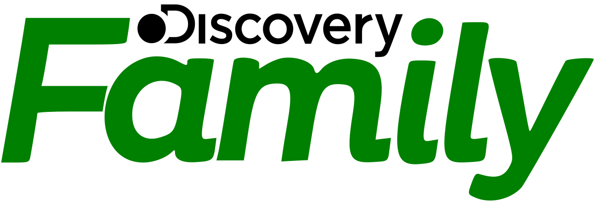
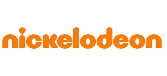
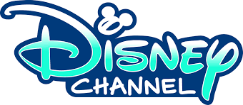
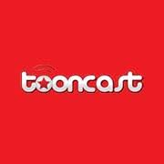

Boomerang debuted in 1992 as a programming block on Cartoon Network, dedicated to classic animation from the WB library
(including Warner Bros. Cartoons and Hanna-Barbera productions, among many others), and was eventually spun-off into its own separate network in 2000.
In the late 2000s, Boomerang would engage in drift by airing more modern and contemporary programming, including reruns of shows that were either acquired or produced for Cartoon Network.
A 2015 relaunch (which aimed to promote Boomerang as a "second flagship" brand alongside Cartoon Network) saw Boomerang begin to produce its own original programming,
focusing primarily on reboots of popular franchises such as Looney Tunes and Scooby-Doo. In 2017, Boomerang launched its own subscription video on-demand over-the-top streaming service.
Discovery Family

The channel was originally launched by Discovery Communications on October 7, 1996 as Discovery Kids, a spin-off of Discovery Channel which primarily featured science and nature-themed programming aimed towards a youth audience.
In 2010, Discovery Kids was relaunched as The Hub (later Hub Network) as part of a joint venture with Hasbro led by veteran executive Margaret Loesch.
Nickelodeon

Nickelodeon is an American pay television channel which launched on April 1, 1979,
as the first cable channel for children.[1] It is run by Paramount Global through its networks division's Kids and Family Group.
Its programming is primarily aimed at children aged under 18,[2] along with a broader family audience through its program blocks.
Disney XD
Disney XD is an American pay television channel owned by the Disney Branded Television and Disney Media and Entertainment Distribution units of The Walt Disney Company. The channel is aimed primarily at older children ages six to eleven years old.
Disney Channel

Disney Channel (occasionally shortened as Disney) is an American pay television channel that serves as the flagship property of Disney Branded Television, a unit of the Disney General Entertainment Content division of The Walt Disney Company.[1] The channel was originally called The Disney Channel from 1983 to 1997, then shortened to "Disney" from 1997 to 2002, until settling with "Disney Channel".
Tooncast

Tooncast is a Latin American pay television channel owned by Warner Bros. Discovery through its International division. It was launched on 1 December 2008;[1] its programming consists of classical animation, both from Hanna-Barbera and Cartoon Network. The channel is a commercial-free service.